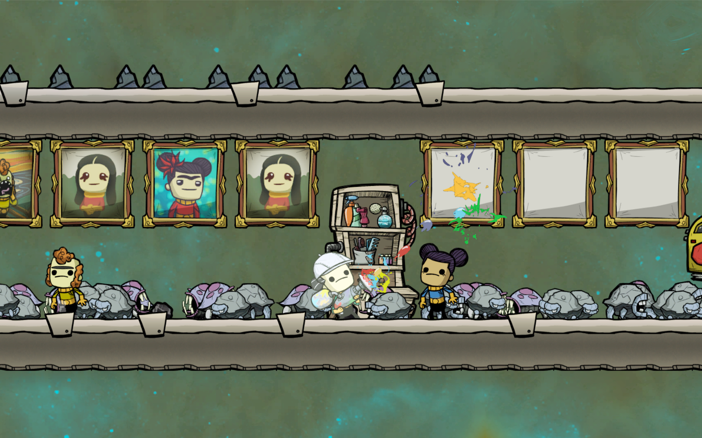
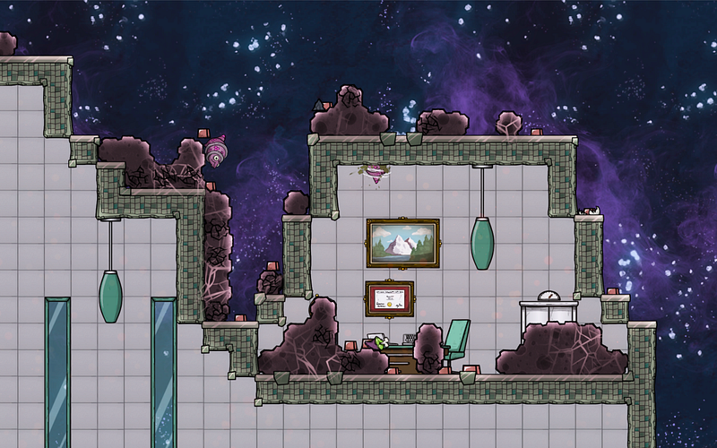
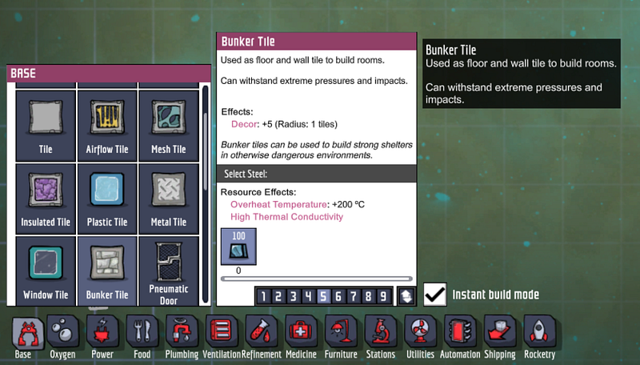
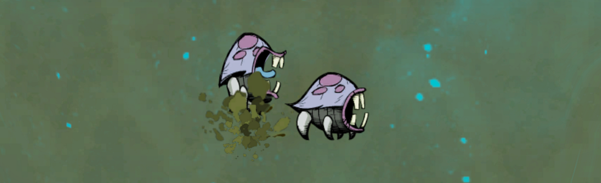
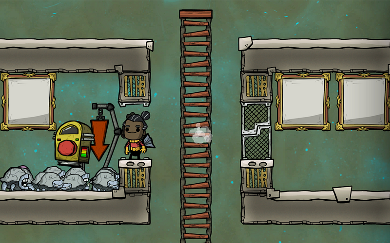
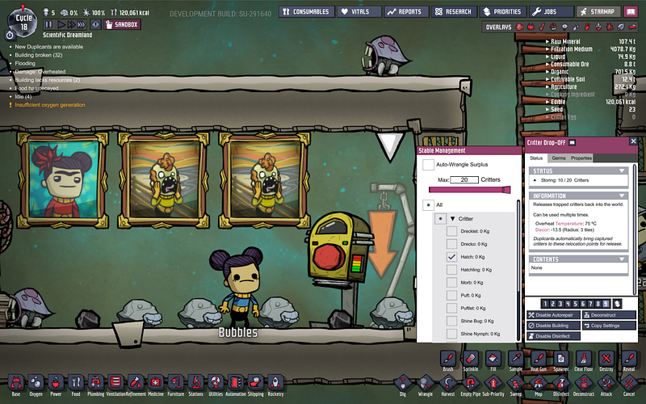
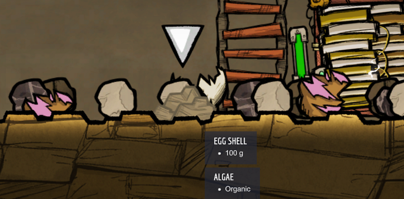
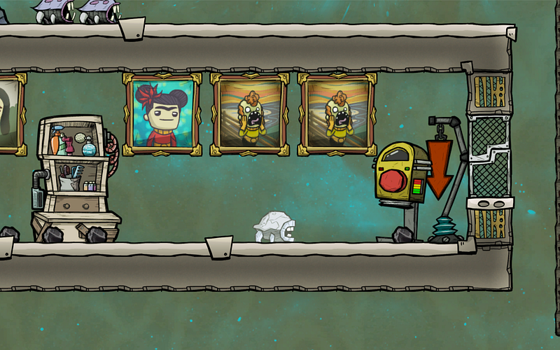

初心者のためのハッチ利用ガイド
初心者のためのハッチ利用ガイド

Oxygen Not Includedにおいて石炭の安定的な供給は宇宙に出て行くための必須条件だ。そのためにはハッチを正しく管理・利用する必要がある。
何故石炭が必要なのか
個人的には、石炭は石炭発電に使うものではない。
ゲーム序盤は、石炭発電を使うところもあるし、発電施設にはほぼ必ずバックアップとして石炭発電機を接続しておくが、ゲームがすすむにつれてこれらは基本稼働しなくなる。
本当に石炭がほしくなるのは宇宙バイオームに出て行くときである。

宇宙から降り注ぐ隕石から基地を守るには鋼鉄でできたシェルタータイル（ないしシェルタードア）で屋根をまもるしかない。（厳密にいうと他にも抜け道もあるようだが…）。

基地を満遍なく守ろうとすればこの鋼鉄が大量に必要だが、鋼鉄を作るのに精錬炭素が必要であり、精錬炭素を作るには大量の石炭が必要なのである。
石炭を掘り尽くすのとハッチを育てる労力を天秤にかけるなら、ハッチを育てる方がはるかに簡単なので、ハッチは確実に育てておくべきだ。
ハッチとは

ハッチはゲーム序盤からそのあたりをうろついている生物だ。特に危害を加えてくるでもなく、そのあたりをウロウロしている。
ハッチを殺すとその肉を食料にすることができるが、この利用方法は食料が枯渇して本当にどうしようもなくなったときか、家畜化が充分に進んでハッチの数が増えすぎたときだけにするべきだろう。
ハッチの本来の利用方法はその排泄物を獲得することである。
ハッチには亜種が何種類か存在するが、基本何らかの鉱物を食して、別の物を排泄する。
また、ハッチは相当しぶといが、放置しておくと、マップ内から完全に姿を消してしまうことがある。その場合、もうハッチを飼育することはできないので、先に手を打っておく必要がある。できればゲーム序盤でハッチ厩舎を作っておきたい。
ハッチの捕獲
ハッチを捕獲するには牧夫能力を持った複製人間が必要。ただし、それ以外には厩舎、動物解放ポイント、給餌機だけがあればよい。
ほぼどんな環境でも生きていけるし（汚染酸素だろうが、天然ガスだろうが、温度が極端でなければ大丈夫）、餌もあまりうるさく制限がないので、捕獲も飼育も簡単である。
厩舎から逃げ出すと野生化するので、逃げ出さないようにする必要がある。
逃げ出せないようにするにはハッチを置きたい場所から、縦横2タイル分、床の存在しない空間を作ればよい。
個人的には以下のように、部屋と部屋の間に3タイル間をあけ、真ん中にハシゴを通すスタイルで基地全体を構築している。これで万が一ドアから逃げ出せてもハッチがそれ以上逃げ出すことはない。

ハッチに限らず、だが、動物解放ポイントではそこに解放する動物の種類を指定する必要がある。これを忘れると捕獲して捕獲しても永遠に厩舎に連れていってくれない。

また、他に意図が無い限りは厩舎は全てタイルに張り替えること。
タイル以外の床があるとハッチはそこに隠れて活動停止する。活動停止すると食事もしないし、排泄もしない。

ハッチは基本餌がある限り増え続けるので動物解放ポイントの設定から厩舎内の最大個体数を設定しておく。
96タイルの厩舎で確かハッチ8匹がストレスなく飼育できる上限。これは厩舎内の卵も含めての数であるので、余裕があれば卵は別の場所に移動するか、最大個体数を6匹等、低めに設定して、卵用のバッファーを設定しておくとよい。
また複数の厩舎でハッチを飼育したい場合、動物解放ポイントの設定から余剰個体を自動的捕縛するオプションを有効にしておく（日本語版でどのような名称なのか不明）。こうしておけば、手の空いたときに自動的に移動が行われる。
ハッチの飼育
最も基本的なハッチはかなり何でも食べる。
ただし、複製人間の食料はかなり少量しか食べない。排泄物の量は取り込んだエネルギー源の量と比例するので、資源を生産したい場合は注意すること。（肉資源としてハッチを飼ってるなら問題なし）
ハッチは食べたものの重量がある一定の量となると排泄を行う。
つまり、なにかしら食べさせ続けることが大事だ。給餌機にいつもエサがあるのを確認しておこう.（もちろんエサの運搬を自動化してしまえばよいのだが…）
亜種の石ころハッチは鉱物のみを食べ、石炭の排泄効率が若干よい。ハッチを石炭生産施設として扱うなら石ころハッチを残すようにするとよい。

石ころハッチはふつうのハッチから突然変異で生まれてくるが、その可能性をあげるには堆積岩を餌として与え続けるといい。
石ころハッチは堆積岩も食べるのでそのまま同じ餌を与え続ければよい。
ハッチのその他の使い方
一旦ハッチの飼育が軌道に乗ったのなら、今度は余剰ハッチを有効利用するか、間引く必要がある。数が多すぎるとハッチの石炭生産能力ががた落ちになるためだ。
殺すのは簡単なので、ここではそれ以外の利用方法を考える。
例えば基本のハッチは雑食性のため、いらない資源を処理してくれるのに役立つ。
（追記：ここからの部分は記憶で書いていたのですが、検証してみたところ、ハッチは汚染土を食べませんでした。すみません…）
一例として、浄水機がある。浄水器のある部屋に放し飼いにしておけば、生き続ける限りハッチは汚染土を食べ続けてくれる。
この際、石炭生産のために飼うわけではないので、特に厩舎等は設置する必要はない。
パフ、パクーと一緒に飼うのも良いだろう。（パフの排泄物のヘドロから藻を作り、その藻をパクーに与える。パクーの排泄する汚染土をハッチに与える）
（ここまで）
とりあえずハッチの飼育はほぼ必須なので、是非試してみてほしい